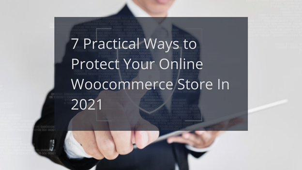
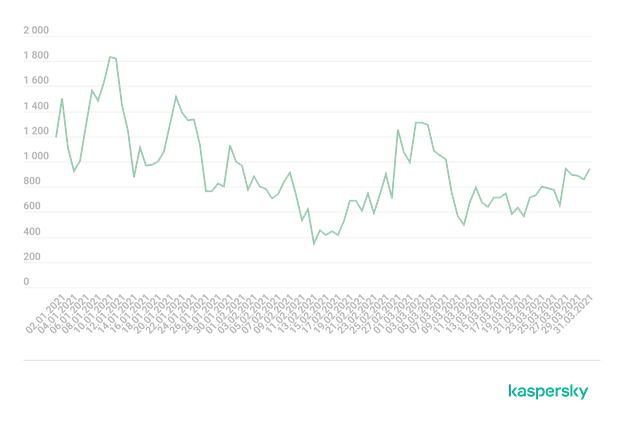
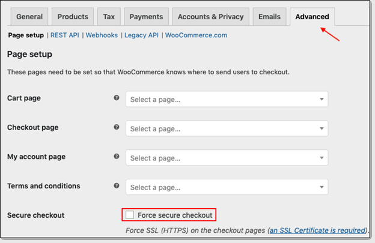

Pandemic has been pivotal in many ways. One of which is the security threats that major eCommerce platforms are facing during the COVID19 outbreak. Google stopped more than 18 million malware attacks in 2020. So, if you have an eCommerce website, especially on a WordPress platform, it becomes paramount to plan for WooCommerce security.
WooCommerce is one of the most popular eCommerce and trusted platforms across the internet. It offers excellent features and tools to create online stores for your WordPress website.
However, there has been an increase in the issues with WooCommerce store security. For example, WordPress asked several open-source plugins like WooCommerce to update their security measures for blind SQLi vulnerability. So, here are some ways in which you can protect your online WooCommerce store.
Table of Contents
- Right Hosting Service
- Security Plugins
- SSL/TLS Certifications
- Two Factor Authentications(2FA)
- Traffic Monitoring
- Security Best Practices
- Backups
1. Right Hosting Service
Choosing the exemplary hosting service for your WooCommerce security becomes vital as it stores data, files, and core services. In addition, the allocation of server resources like RAM, hard drive space, and bandwidth depends on the file uploaded through the hosting service. So, if your hosting service is not secure, there is a high risk to the security of your online store.
Here are some of the essential security features that your hosting service should provide,
Web Application Firewall (WAF)
WAF blocks cross-site forgeries (CSF), cross-site scripting (XSS), SQL injections, and other such attacks on your online store. It works like a reverse proxy where all the traffic must pass through the firewall before reaching the webserver.
DDOS Protection
Distributed Denial of Service attacks saw a massive surge in January 2021, with numbers as high as 1800/day. It is one of the most common cybersecurity threats that need protection through the segregation of web requests. Additionally, your hosting service provider will need advanced monitoring tools as they can’t block legitimate traffic.
{kind=link}

SFTP Policy
File sharing protocols for uploads to the web server must be secure. Especially for WooCommerce store security, your hosting service should have an SFTP(Secure File Transfer Protocol) policy in place as it can reduce the chance of Man in the Middle attacks.
Enhancing WooCommerce security through a top-notch hosting service is the first part of your process. Next, you will need more measures to ensure data protection—another way to ensure that security of the WooCommerce store is to use plugins from WordPress.
2. Security Plugins
There are more than 58700 plugins on WordPress with several security-related options. These plugins can help you improve WooCommerce security with features like firewalls, malware scanners, two-factor authentication, and many more. Some of the best security WordPress plugins are,
Jetpack- It is a popular WordPress plugin due to its higher site speeds and social media features. Jetpack also helps scan the websites, track suspicious activities, filter spammy comments, and protect against brute force attacks.
All-in-One WP Security & Firewall is one of the finest security plugins that offers protection against brute force attacks and analyzes your website for vulnerabilities. In addition, the All-in-One WP Security & Firewall plugin will strengthen the firewalls of your WooCommerce store and suggest improvements to the present security measures.
WPfail2ban- One of the most significant challenges is segregating web requests on your WooCommerce store because you can’t just block all the traffic especially legitimate ones. This plugin helps segregate malicious requests through a block approach where two types of blocks are formed- hard and soft.
Wordfence- If you want real-time traffic monitoring right on your WordPress dashboard, Wordfence is the best option. It is a plugin that also helps improve the security of your WooCommerce store through two-factor authentication, adding an extra layer of protection.
WPhardening- It is one of the most feature-loaded security plugins among others in the market. You can audit your website with WPhardening and get API security, server hardening, disabling data disclosure, removing metadata, etc.
Plugins are great for WooCommerce store security. However, it would be best if you had a security solution that can encrypt the data exchanged by your customers.
3. SSL/TLS Certifications
SSL or Secure Socket Layer safeguards the sensitive user data through encryption of the information shared between a user and a website. It uses an encryption algorithm to scramble the data and make them unreadable through encryption.
TLS (Transport Layer Security) is an advanced version of SSL. However, most modern SSL-based solutions offer TLS features. Your hosting service provider will offer SSL certification as a part of the whole bundle. If not, you can opt for a professional SSL certification from cheap SSL provider like ClickSSL. Activating SSL on your WordPress through the settings option is easy.

Find Advanced in the settings option and enable “Force Secure Checkout.” As popular search engines like Google push for HTTPS websites, SSL becomes necessary. It will enable HTTPS on your websites which are indicated through a padlock on the URL address bar.
While it is excellent for you to install an SSL certificate and have a trusted brand of HTTPS security, you need to ensure proper authentications of user access to avoid phishing attacks
4. Two Factor Authentications (2FA)
Two-factor authentications (2FA) are specific types of security measures that can help enable an extra protection layer over your core user access protocol. In simple terms, it cross-verifies the user’s identity through verification. A specific type of multi-factor authentication, 2FAs are excellent for WooCommerce store security.
2FA helps in protecting sensitive data on your WooCommerce store. For example, suppose you are using a username and password to log in at the WooCommerce store. In that case, 2FA will verify your identity by sending a push notification on your smartphone, which may have a passcode that you will have to enter on the login page.
This process of sending a verification push notification is often termed out-of-band authentication. It is an excellent way to reduce data theft, phishing, brute-force attacks, credential exploitation, and more.
All these security measures are not enough if you are not monitoring the traffic. As there can be malicious requests and spammy links that are threatening your WooCommerce store.
5. Traffic Monitoring
Several tools are available that you can leverage to monitor real-time traffic on your WooCommerce store. In particular, such monitoring can help you segregate legitimate domains and traffic details. In addition, it enables the scanning of web requests, outbound links, and spammy backlinks.
However, the most significant benefit of scanning the traffic is identifying a specific region or country where recurring malicious web requests, cookies, or even spam links occur. Next, you can deploy geoblocking to enhance the protection of your WooCommerce store from such spammy traffic.
6. Security Best Practices
Advanced security needs specific measures to ensure that no brute force attack can dismantle your website’s firewalls. Some of these measures are,
Maintaining activity logs- If you have multiple admins working on the same WooCommerce online store, having every activity logged is essential to ensure any breach does not go undetected.
Uptime monitoring- Every time your website suffers from a downtime, it is not always a server that has crashed or even a backend code went wrong. Monitoring the WooCommerce store’s uptime enables you to detect the reasons for possible downtime.
If the reason is related to WooCommerce security, you can prevent further downtimes by quickly enhancing the security measures.
Cloud-based Web App Firewall(WAF)- helps ensure WooCommerce store security through filtration of HTTP requests. WAF acts as a frontline between your application and an HTTP request. It blocks the request before reaching your app and prevents attacks like SQL injections, cross-site scripting, and others.
Admin Credentials- Updating your admin credentials from time to time can help ensure the security of your WooCommerce store. Hackers exploit admin usernames and URLs to launch phishing attacks. So, it is essential to change usernames or URLs.
All the protection, security measures, plugins, and more are not 100% efficient. So, you need a backup for the worst-case scenario.
7. Backups
Creating backup for your WooCommerce store is crucial to security. In any case, if your security systems fail to prevent any brute force attack, losing all the data can be more painful than downtime. However, for websites and online stores with massive databases, this can be a challenging task at hand.
The solution for such websites and WooCommerce stores is to create a backup on cloud-based database services. As some of the cloud service providers offer built-in data recovery features, your data is not only safe but can be quickly restored.
Conclusion
As we move into a post-pandemic era, the level of cyber threats and attacks on eCommerce stores will increase. So, you will need an equally reliable strategy for WooCommerce store security. Though there are challenges for constantly monitoring traffic, deploying access protocols, and integrating authentication systems, it will boil down to the specific need of your WooCommerce store.
About the Author
Martin Brown is a digital marketing and digital asset management specialist. He has been in the industry for over a decade, helping people understand digital technology and apply them to their business through guest posting. Martin is married with three children. He enjoys playing basketball and scuba diving during his leisure time.
Leave a Reply